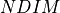
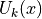
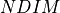
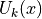
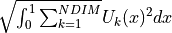

Numerical Continuation Routine¶
To conduct the numerical continuation of the points produced by the mass conservation and semi-diffusive approaches, we use the very well developed software AUTO. In particular, we use the updated version AUTO 2000 made accessible through Libroadrunner and its extension rrplugins [SBG+15]. In the examples we have provided throughout this documentation we choose a set configuration of the parameters to run on all of the points found by the optimization routine. Although this is sufficient for detecting if bistability occurs in a particular network, if one wants to identify possible true physiological values, then it is best to consider each point individually while varying AUTO parameters. This is because if the points exist with varying ranges in the point sets then a set AUTO configuration may miss the detection of bistability for certain parameter settings.
Given most users may be unfamiliar with numerical continuation, in this section we provide some tips to consider when
conducting the numerical continuation routine. To begin, it is first suggested to consider the available parameters in
AUTO parameters. Note that as said in earlier sections, one should not set ‘SBML’
or ‘ScanDirection’ in these parameters as these are automatically assigned. Further descriptions of these parameters
can be found in the older AUTO documentation. Of the
available parameters, the most important are NMX, RL0, RL1, A1, DSMIN, and DSMAX, although more advanced users may
find other parameters useful. The following is a short description of these parameters:
1. NMX is the maximum number of steps the numerical continuation is able to take. If one is using smaller values for DSMIN and or DSMAX it is suggested that NMX be increased. Note that an increase in NMX may result in longer run times.
2. DSMIN is the minimum continuation step size. A smaller DSMIN value may be beneficial if the values for the species’ concentrations or principal continuation parameter is smaller than the default value provided. Larger values may be helpful in some contexts, but for most examples the parameter should be left at its default value.
3. DSMAX is the maximum continuation step size. A large DSMAX is necessary when considering the physiological values
provided by crnt4sbml.CRNT.get_physiological_range() as this produces larger values for the species’
concentrations and principal continuation parameters. A smaller DSMAX is also beneficial for both producing smoother
plots and identifying special points. Although a smaller DSMAX will increase the runtime of the continuation.
4. RL0 is the lower bound for the principal continuation parameter (PCP). This value should be set at least a magnitude smaller than the starting value of the PCP, with 0.0 being the absolute minimum value that should be provided.
5. RL1 is the upper bound for the principal continuation parameter (PCP). This value should be set at least a magnitude larger than the starting value of the PCP. An arbitrarily large value should not be used as this range can drastically affect the discovery of limit points and require fine tuning of DSMAX and DSMIN.
6. A1 is the upper bound on the principal solution measure. The principal solution measure used for differential equations
is the  -norm defined as follows where  is the number of species and  is the solution
to the ODE system for species
-norm defined as follows where  is the number of species and  is the solution
to the ODE system for species 
.
Although this parameter is somewhat difficult to monitor in the current setup of the continuity analysis, it is usually best to set it as a magnitude or two larger than the largest upper bound established on the species’ concentrations.
To configure these parameters, it may be useful to see what special points are produced by the numerical continuation run. This can be done in both approaches by adding ‘print_lbls_flag=True’ to the run_continuity_analysis functions. For a description of the possible points that may be produced consider the section ‘Special Points’ in the XPP AUTO documentation. For the purposes of detecting bistability, the most important special points are limit points (LP). These points often mark a change in the stability of the ODE system and are more likely to produce overlapping stable and unstable branches that lead to bistability. It is the search for these special points that should guide the configuration of the AUTO parameters.
In addition to limit points, finding a set of two endpoints can be useful in determining if the ranges for the principal continuation parameter are appropriate. If no endpoints are found, then it is likely that the bounds chosen for the principal continuation parameter need to be changed. Note that when ‘print_lbls_flag=True’ is added to the run_continuity_analysis functions, the numerical continuation is first ran in the Positive direction and if no multistability is found, then the routine is ran in the Negative direction. This may result in two printouts per point provided. This switching of directions can often produce better results for numerical continuation runs.